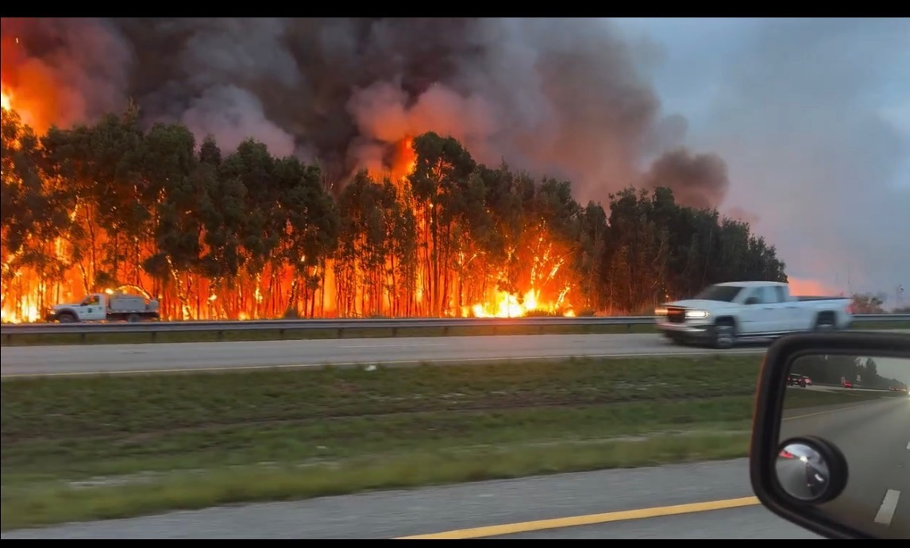

A single wildfire-smoke event became a documented, compliance-checked, resellable operating system — iterated across eight distinct versions, start to finish. This is what our level of detail actually looks like.
In mid-June 2026, wildfires broke out in the Everglades / west Miami-Dade corridor and heavy smoke and soot drifted east across Miami-Dade and Broward. Smoke damage is a spike event: demand appears within hours of a plume, peaks for days, and fades. We treated the plume as a live signal to be captured that same week — anchored to a real, dated event, not stock footage.
When smoke hits, people call now, in a panic, and hire whoever answers first and sounds local and legitimate. Own the call at minute zero, own the job.
People answer local numbers and ignore unknown ones. Owning the right rate-center DIDs — Broward 954/754, Miami-Dade 305/786 — with branded caller ID is the difference between a booked inspection and a call marked “Spam Likely.”
Smoke leaves hidden damage in HVAC, contents, and indoor air with no visible flames. “We protect your family’s air and document your claim” converts a free inspection into a restoration contract.
A single calling motion feeds direct commercial remediation (one condo tower = many units + HVAC = a contract worth a hundred single-family jobs) and a restoration-partner referral network for overflow.
Eight distinct versions, in order. The “attention to detail” tells are almost all defensive — negatives, safety-first scripting, claim-hygiene, honesty guardrails, FAA compliance — which is exactly what makes it credible.
Three tiers of smoke exposure — highest / moderate / lower — mapped to specific neighborhoods and turned into matching ad groups so the message matched local risk.
Smoke Emergency / Drift & Haze / Roofing-Storm Bundle — full RSA headlines, descriptions, a keyword set, and a hand-built negative-keyword list (jobs, DIY, candle, cigarette, barbecue, incense, school project), wired into a white-label intake queue with SMS follow-up.
A calm, structured inbound call and text script — greeting, location capture first, home-vs-business, symptom check (“is anyone having breathing issues?”), weather-aware expectation-setting, closer hand-off, voicemail and missed-call recovery.
Inbound call to a Vitelity DID → record → transcribe → an LLM extracts structured fields (address, urgency, service type, callback window) → CRM/LMS backfill → auto-appointment → SMS confirmation, with a defined event router, CRM field map, worker-queue schema, and database tables.
A distinct creative version reframed the offer around air quality and family health: “Wildfire smoke can linger indoors long after the air clears — get a free home air check.”
WIN TV (Weather Intelligence Network) — a six-episode cinematic mini-documentary slate (hurricane, tornado, ice storm, flash flood, “Wildfire on the Wind,” and a nationwide-restoration finale), each ending in a real-time “activate WIN during this episode” deep-link that tracks which episode drove each lead.
Every user gets their own Smart-DID, zero-touch provisioning, auto-activation on payment, real-time collaboration workspaces, and photo-to-estimate — built as a parallel line that explicitly does not disturb the live site or revenue.
Upload drone footage → AI damage detection → an auto roof estimate in under 30 seconds → a 3D roof model. Wrapped in an FAA Part 107 compliance layer: pilot certification, LAANC airspace authorization, no-fly zones, insurance, privacy.
The through-line: a plume-week ad idea became a documented, compliance-checked, resellable operating system — and at every stage the detail tells are defensive. That is what makes it real.
Wildfire smoke spikes happen on a predictable calendar somewhere on earth almost year-round. When one market’s window closes, another opens.
Only three inputs change per market. Everything else — scripts, AI intake, CRM schema, the insurance-documentation offer, WIN TV, drone-to-quote — is reused verbatim.
The rate-center DIDs for local presence in that market.
The exposure-zone tiers from that market’s live plume.
The language — Spanish, French for Canada, Greek, Portuguese…
The infrastructure is already the “duplicate for a new region” model: the WIN National Grid assigns one authorized provider per territory, and the same live-alert ingestion that watched the Everglades plume works off any national weather service — point it at a new country and the dispatch logic lights up the local DIDs automatically.
“Build the intake once, own the local numbers everywhere, and let the weather feed tell you which market to activate this week — all the fires, globally, run from one operating system.”
This is the level of detail behind every Telvergence build — one industry, one market, one plume at a time. The same operating system runs the whole lead-engine network.